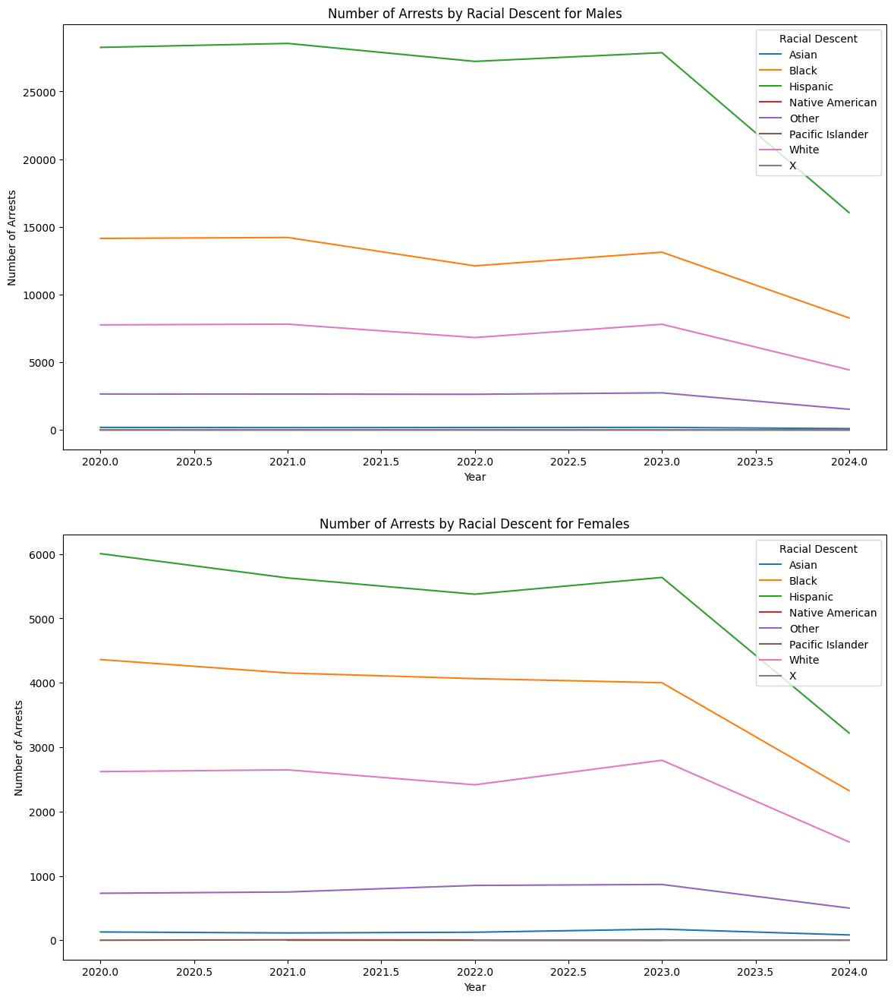
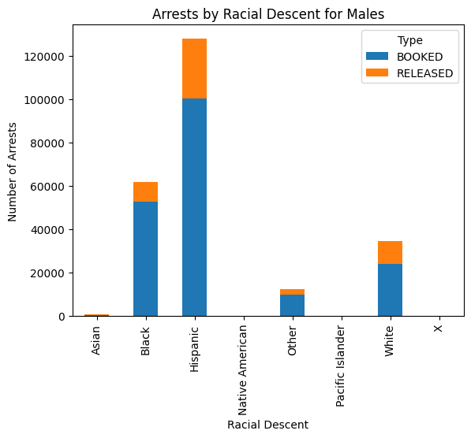
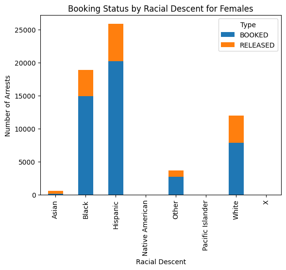
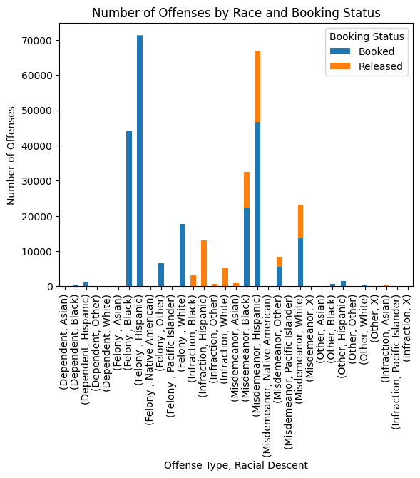
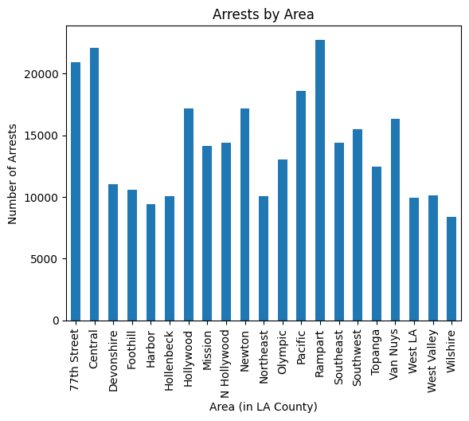
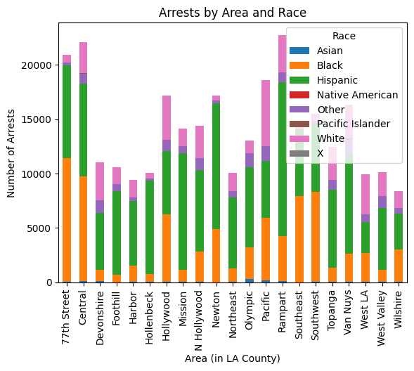
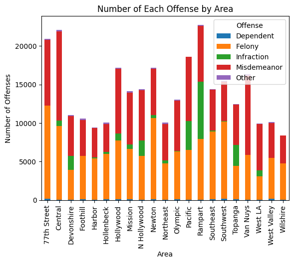

We will be analyzing the publicly recorded data on arrests made in Los Angeles county from 2020 to present day. Since arrests are the first process in the criminal justice system, examining them can provide more insight into potential policing malpractices, underlying biases, and the initial stages of racial and ethnic disparities.By focusing on a city known for its racial and ethnic diversity, we aim to address key research questions: Are there disparities in arrest trends among different racial or ethnic groups? Do social factors, such as neighborhoods and demographic profiles, influence policing practices and arrest rates? This project aims to reveal patterns in LA that’re concordant to the broader national trends, while also highlighting any unique local dynamics.
Method
This project visualizes and analyzes a dataset, provided by LAPD and made public by the LA city database, which compiles the recordings of arrests made in Los Angeles county from 2020 to present day. It’s updated weekly and consists of mostly categorical data, including the following columns: ‘Type’, ‘Area’, ‘Age’, ‘Charge’, ‘Offense’, and ‘LAT’ and ‘LON’ (latitude and longitude coordinates of the arrest location). Since the dataset was very extensive, the processes of filtering and cleaning the data were utilized in order to better operationalize it. For instance, to filter the data, columns that weren’t pertinent to the research questions mentioned above were omitted. These included ‘Report ID’, ‘Area ID’, ‘Charge Group Code’, etc. After filtering and cleaning the data through google sheets, the downloaded csv file was uploaded to jupyterhub in order to make coding and analysis through the Python notebook possible. Then, importing libraries such as pandas, matplotlib, numpy, and was necessary in order to read the csv file, make visualizations, and work with multidimensional data or arrays. With the help from these libraries, visualizations such as line plots, bar graphs, and stacked bar graphs were created to represent the data along with descriptive statistics. Incorporated in the results, the visualizations along with the trend analysis will be found, including yearly trends and percentage calculations.
Results
# import librariesimport matplotlib.pyplot as plt # plottingimport numpy as np # numerical operationsimport pandas as pd data = pd.read_csv('final_dataset.csv')data
Type
Year
Area
Age
Sex
Descent
Charge
Offense
LAT
LON
0
RELEASED
2024
Hollywood
18
M
Hispanic
Against Family/Child
Infraction
34.1017
-118.3224
1
BOOKED
2024
Newton
25
M
Hispanic
Against Family/Child
Misdemeanor
33.9748
-118.2565
2
RELEASED
2024
Rampart
29
M
Black
Against Family/Child
Misdemeanor
34.0491
-118.2823
3
BOOKED
2024
Newton
58
M
Hispanic
Against Family/Child
Felony
34.0366
-118.2469
4
BOOKED
2024
Foothill
40
M
Other
Against Family/Child
Felony
34.2570
-118.3994
...
...
...
...
...
...
...
...
...
...
...
298753
RELEASED
2020
Northeast
36
M
White
Not Recorded
Misdemeanor
34.0947
-118.2877
298754
RELEASED
2020
Northeast
40
F
White
Not Recorded
Misdemeanor
34.1441
-118.2254
298755
RELEASED
2020
Northeast
48
M
White
Not Recorded
Misdemeanor
34.0935
-118.2866
298756
RELEASED
2020
Northeast
39
F
White
Not Recorded
Misdemeanor
34.1381
-118.1874
298757
RELEASED
2020
Northeast
44
M
Hispanic
Not Recorded
Misdemeanor
34.1024
-118.2546
298758 rows × 10 columns
From this sample of entries, one is able to view the columns/variables as well as some of the values that will be used in this analysis. There are also some summary statistics that reveal the most frequent value for each of the columns. Just to name a few, most of the arrests were booked, during 2021, in Rampart, and were individuals of hispanic descent.
male = data[data.Sex =='M']female = data[data.Sex =='F']grouped_male = male.groupby(['Year', 'Descent']).size().reset_index(name ='Count')pivot_male = grouped_male.pivot(index ='Year', columns ='Descent', values ='Count')grouped_female = female.groupby(['Year', 'Descent']).size().reset_index(name ='Count')pivot_female = grouped_female.pivot(index ='Year', columns ='Descent', values ='Count')years_male = pivot_male.index.to_numpy()descent_columns_male = pivot_male.columns.to_numpy()counts_male = pivot_male.to_numpy()years_female = pivot_female.index.to_numpy()descent_columns_female = pivot_female.columns.to_numpy()counts_female = pivot_female.to_numpy()fig, (ax1, ax2) = plt.subplots(nrows =2, ncols =1, figsize = (14, 16))# plot for malesfor i, descent inenumerate(descent_columns_male): ax1.plot(years_male, counts_male[:, i], label=descent)ax1.set_title('Number of Arrests by Racial Descent for Males')ax1.set_xlabel('Year')ax1.set_ylabel('Number of Arrests')ax1.legend(title ='Racial Descent')# plot for femalesfor i, descent inenumerate(descent_columns_female): ax2.plot(years_female, counts_female[:, i], label = descent)ax2.set_title('Number of Arrests by Racial Descent for Females')ax2.set_xlabel('Year')ax2.set_ylabel('Number of Arrests')ax2.legend(title ='Racial Descent')plt.show()

These line charts represent the number of arrests made over time, by race. For both males and females, Hispanic people are arrested at the highest rate, followed by black people and then white people. In all cases, the number of arrests are highest in 2020 and then either plateau or decrease, with 2024 having the lowest rate of arrests across all races.
grouped_male = male.groupby(['Descent', 'Type']).size().unstack(fill_value =0)grouped_female = female.groupby(['Descent', 'Type']).size().unstack(fill_value =0)# plot for males grouped_male.plot(kind ='bar', stacked =True)plt.title('Arrests by Racial Descent for Males')plt.xlabel('Racial Descent')plt.ylabel('Number of Arrests')plt.show()# plot for femalesgrouped_female.plot(kind ='bar', stacked =True)plt.title('Booking Status by Racial Descent for Females')plt.xlabel('Racial Descent')plt.ylabel('Number of Arrests')plt.show()percentages_male = grouped_male.div(grouped_male.sum(axis =1), axis =0) *100percentages_female = grouped_female.div(grouped_female.sum(axis =1), axis =0) *100print("Percentage of Arrests by Racial Descent for Males:", percentages_male)print("Percentage of Arrests by Racial Descent for Females:", percentages_female)


Percentage of Arrests by Racial Descent for Males: Type BOOKED RELEASED
Descent
Asian 29.832936 70.167064
Black 85.291836 14.708164
Hispanic 78.573774 21.426226
Native American 90.000000 10.000000
Other 79.754400 20.245600
Pacific Islander 80.952381 19.047619
White 69.837513 30.162487
X 7.692308 92.307692
Percentage of Arrests by Racial Descent for Females: Type BOOKED RELEASED
Descent
Asian 22.756410 77.243590
Black 78.898354 21.101646
Hispanic 78.177319 21.822681
Native American 100.000000 0.000000
Other 74.236280 25.763720
Pacific Islander 100.000000 0.000000
White 65.575546 34.424454
X 0.000000 100.000000
This set of barcharts represent the number of arrests by racial descent as well as whether the arrest was sent to booking or if the detainee was released from custody. 30% of arrests that involved White men, 21% involving Hispanic men, and 14% involving Black men were released from custody at the time of the arrest. In addition, 21% of arrests involving Black women and Hispanic women were released from custody while 34% of arrests involving white women were released.
grouped = data.groupby(['Type', 'Offense', 'Descent']).size().unstack(level=[1, 2], fill_value=0)bookings = grouped.loc['BOOKED']releases = grouped.loc['RELEASED']combined = pd.concat([bookings, releases], axis=1, keys=['Booked', 'Released'])combined.plot(kind='bar', stacked=True)plt.title('Number of Offenses by Race and Booking Status')plt.xlabel('Offense Type, Racial Descent')plt.ylabel('Number of Offenses')plt.legend(title='Booking Status')plt.show()

This stacked bar chart represents the number of releases or bookings by race and offense type. All felonies were taken to booking and a majority of infractions were released. 40% of arrests involving white people charged with misdemeanors got released. 31% and 30% of arrests involving Black people and Hispanic people, respectively, charged with misdemeanors got released. Lastly, 4% of arrests involving Black people charged with infractions go to booking.
arrests_by_area = data['Area'].value_counts()arrests_by_area = arrests_by_area.sort_index()arrests_by_area.plot(kind ='bar')plt.title('Arrests by Area')plt.xlabel('Area (in LA County)')plt.ylabel('Number of Arrests')plt.show()

race_by_area = data.groupby(['Area', 'Descent']).size().unstack(fill_value =0)race_by_area = race_by_area.sort_index()race_by_area.plot(kind ='bar', stacked =True,)plt.title('Arrests by Area and Race')plt.xlabel('Area (in LA County)')plt.ylabel('Number of Arrests')plt.legend(title ='Race')plt.show()

offenses_by_area = data.groupby(['Area', 'Offense']).size().unstack(fill_value=0)offenses_by_area = offenses_by_area.sort_index()offenses_by_area.plot(kind ='bar', stacked =True)plt.title('Number of Each Offense by Area')plt.xlabel('Area')plt.ylabel('Number of Offenses')plt.legend(title ='Offense')plt.show()

Discussion
This analysis reveals a consistent pattern in the arrest rates among different racial and ethnic groups. Hispanic people are arrested at the highest rate, followed by Black and then White people. This trend aligns with national data, which often shows a disproportionate impact of the criminal justice system on people of color. Additionally, the analysis of booking and release rates by race shows notable inequalities. For instance, a higher percentage of white people are released from custody at the time of the arrest compared to Black and Hispanic people.
Specifically, 30% of arrests involving White men result in release, compared to 21% for Hispanic men and 14% for Black men. This disparity is also evident among women, with a higher percentage of White women being released compared to their Black and Hispanic counterparts. These findings suggest that there may be differential treatment in the decision-making process at the point of arrest. Factors such as perceived risk and socioeconomic status could influence these outcomes. This disparity raises concerns about potential biases in arrest processes and the need for further investigation into the factors driving these differences.
The data on offenses and their outcomes suggests that felonies are predominantly booked, while infractions are mostly released. This trend is expected, as the severity of the offense dictates the processing outcome. However, the percentage of misdemeanor arrests resulting in release varies by race. White people charged with misdemeanors have a higher release rate (40%) compared to Black (31%) and Hispanic (30%) people. Also, although it’s not as significant, 4% of black people are booked for infraction offenses while every other race is released at 99-100%. This also signifies a sort of disparity.
The spatial analysis of arrests shows that areas like 77th Street, Central LA, and Rampart have the highest number of arrests. These areas also show significant racial and ethnic variations in arrest rates. Such disparities could be indicative of varying levels of policing across neighborhoods. It is crucial to examine whether these patterns reflect targeted policing practices or broader community characteristics.
The findings from this analysis highlight the need for ongoing examination of arrest practices and outcomes within the criminal justice system. The observed inequalities in arrest rates, booking and release decisions, and geographical patterns suggest that there may be systemic biases that affect people of color disproportionately, maybe even more in diverse cities like Los Angeles. Future research should aim to explore the factors contributing to these disparities in greater detail. By addressing these issues further, we can work towards a more just and equitable society, where arrest and incarceration rates reflect fairness rather than systemic inequality.
E. Ann Carson. “Prisons Report Series: Preliminary Data Release.” Bureau of Justice Statistics,
https://bjs.ojp.gov/library/publications/prisons-report-series-preliminary-data-release#:~:text=At%20yearend%202022%2C%2032%25%20of,Hawaiian%2C%20or%20Other%20Pacific%20Islander.
U.S. Census Bureau Quickfacts: United States, www.census.gov/quickfacts/fact/table/US/PST045219. Accessed 2 Aug. 2024.